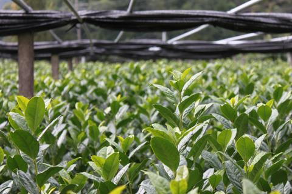
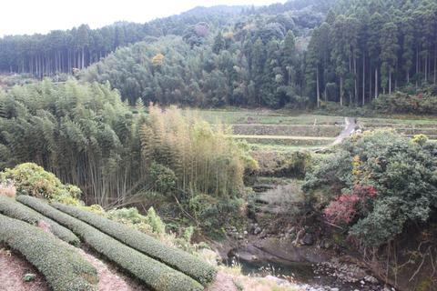

finely ground powder of specially grown and processed green tea leaves
KIRISHIMA
KIRISHIMA, KAGOSHIMA, JAPAN
SWEET PEAS | CELERY
SHOT 4.5 / BOWL 9
TIN (30g) 35
Your daily shot.
TYPE: Certified Organic Matcha
GROWER: Hayashi Family
Shutaro and Kenji Hayashi are fifth generations tea farmers; they are not only exceptional tea growers but also stewards of the land. We were very impressed by their farming practices: bees and spiders to control pests, and goats and geese to control weeds.
Grower on map:
MATCHA #1.5
HOSHINO, YAME, JAPAN
SMOOTH | VERSATILE
SHOT 7/ BOWL 14
TIN (20g) 35
Balanced, introductory.
TYPE: ushucha (thin matcha)
GROWER: Yamaguchi Family
The Yamaguchi have 29 tea cultivars growing on the hills of Hoshino. Whereas Yame is a younger tea producing region that the highly acclaimed Uji, the terroir, availability of tea cultivars and attention to detail in the handcrafting process is yielding some of the best Japanese teas we’ve ever tried.
 Grower on map:
GEN RYU
UJI, KYOTO, JAPAN
GREEN ALMONDS | KALE | UMAMI
SHOT 8/ BOWL 15
TIN (20g) 40
Balanced, introductory.
TYPE: ushucha (thin matcha)
GROWER: Yamaguchi Family
The Yamaguchi have 29 tea cultivars growing on the hills of Hoshino. Whereas Yame is a younger tea producing region that the highly acclaimed Uji, the terroir, availability of tea cultivars and attention to detail in the handcrafting process is yielding some of the best Japanese teas we’ve ever tried.
Grower on map:
UJI HIKARI SINGLE CULTIVAR
UJI, KYOTO, JAPAN
CELERY | KALE | ALMOND BUTTER
SHOT 6.5 / BOWL 13
TIN (20g) 37
Balanced, introductory.
TYPE: ushucha (thin matcha)
GROWER: Yamaguchi Family
The Yamaguchi have 29 tea cultivars growing on the hills of Hoshino. Whereas Yame is a younger tea producing region that the highly acclaimed Uji, the terroir, availability of tea cultivars and attention to detail in the handcrafting process is yielding some of the best Japanese teas we’ve ever tried.
Grower on map:
ASAHI SINGLE CULTIVAR
UJI, KYOTO, JAPAN
SCARLET BEANS| PETRICHOR | SWEET UMAMI
SHOT 8.5 / BOWL 17
TIN (20g) 60
YABUKITA SINGLE CULTIVAR
UJI, KYOTO, JAPAN
CELERY | KALE | ALMOND BUTTER
SHOT 6.5 / BOWL 13
TIN (20g) 37
tea made from unfermented c.sinensis leaves
Long Jing
BANQIAO, ZHEJIANG, CHINA
FRESH SPINACH | STONE FRUIT
SERVICE $11
TIN (40g) 31 | (80g) 59
Zisun Coins
Changxing, Zhejiang, China
FRESH SPINACH | STONE FRUIT
SERVICE $9
Hojicha
KIRISHIMA, KAGOSHIMA, JAPAN
ROAST RICE | CARAMEL
SERVICE $5
TIN (40g) 28 | (80g) 53
Dango Cha
OGURA CHO, UJI, JAPA
ROAST RICE | CARAMEL
SERVICE $5
TIN (40g) 28 | (80g) 53
more oxidized than oolong, green, and white teas, also named "red tea" in China after its liquid color
ASSAM SF
BANQIAO, ZHEJIANG, CHINA
FRESH SPINACH | STONE FRUIT
SERVICE $11
TIN (40g) 31 | (80g) 59
LAKYRSIEW
Changxing, Zhejiang, China
FRESH SPINACH | STONE FRUIT
SERVICE $9
TIME TRAVELLER
KIRISHIMA, KAGOSHIMA, JAPAN
ROAST RICE | CARAMEL
SERVICE $5
TIN (40g) 28 | (80g) 53
OLD MAN’S RESERVE
OGURA CHO, UJI, JAPA
ROAST RICE | CARAMEL
SERVICE $5
TIN (40g) 28 | (80g) 53
HIGH MOUNTAIN BLACK
OGURA CHO, UJI, JAPA
ROAST RICE | CARAMEL
SERVICE $5
TIN (40g) 28 | (80g) 53